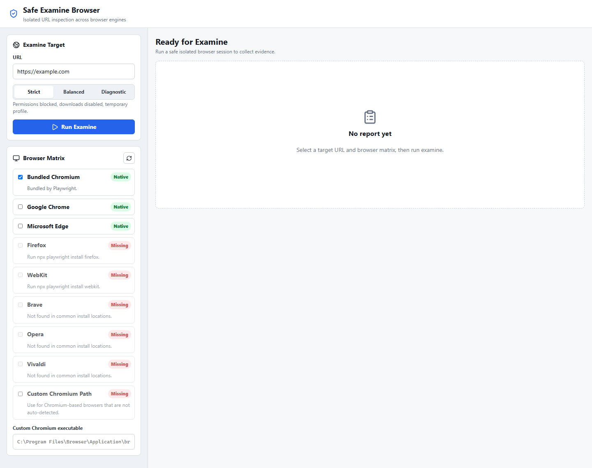

Inspect URLs safely across all your browsers
Sandboxed multi-browser URL inspection tool. Open any URL in isolated sessions, capture screenshots, network activity, console logs, and storage metadata. Evidence without exposure.
Cross-browser matrix
Run one URL across Chrome, Firefox, Edge, Brave, Opera, Vivaldi, WebKit, or any Chromium-based browser in a single pass.
Sandboxed by default
Temporary profiles, blocked permissions, quarantined downloads. Three safety presets from strict isolation to diagnostic mode.
Full evidence capture
Screenshots (desktop + mobile), network request log, console output, cookies, storage keys, and redirect chains in a structured report.
Workbench
